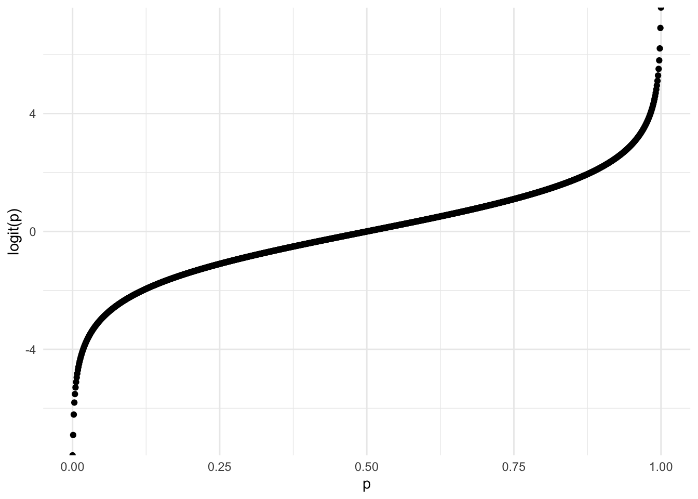
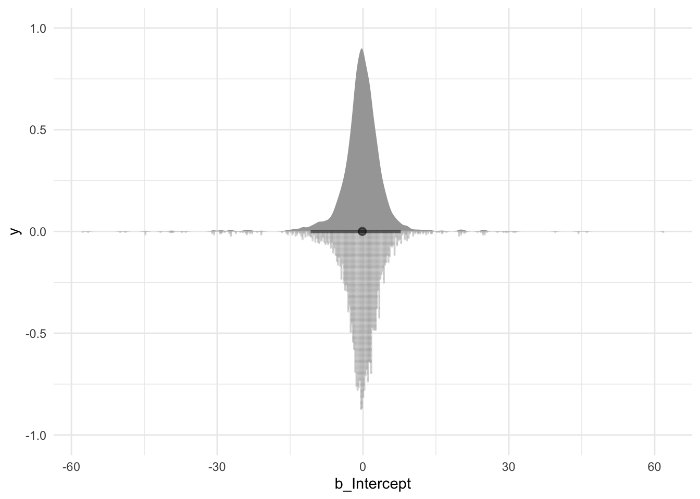
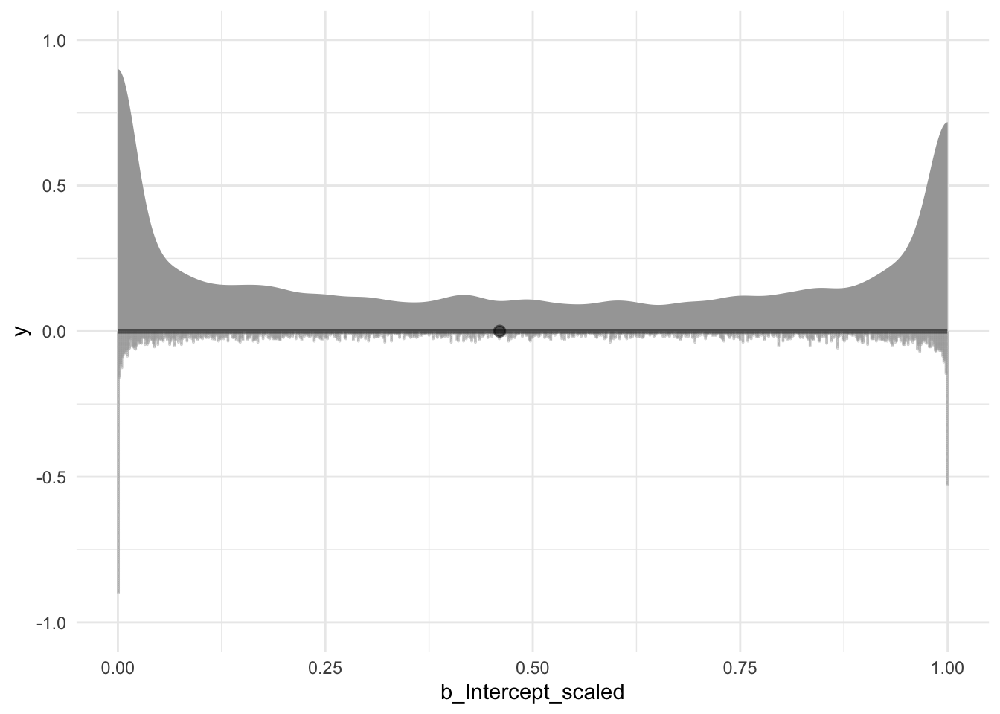
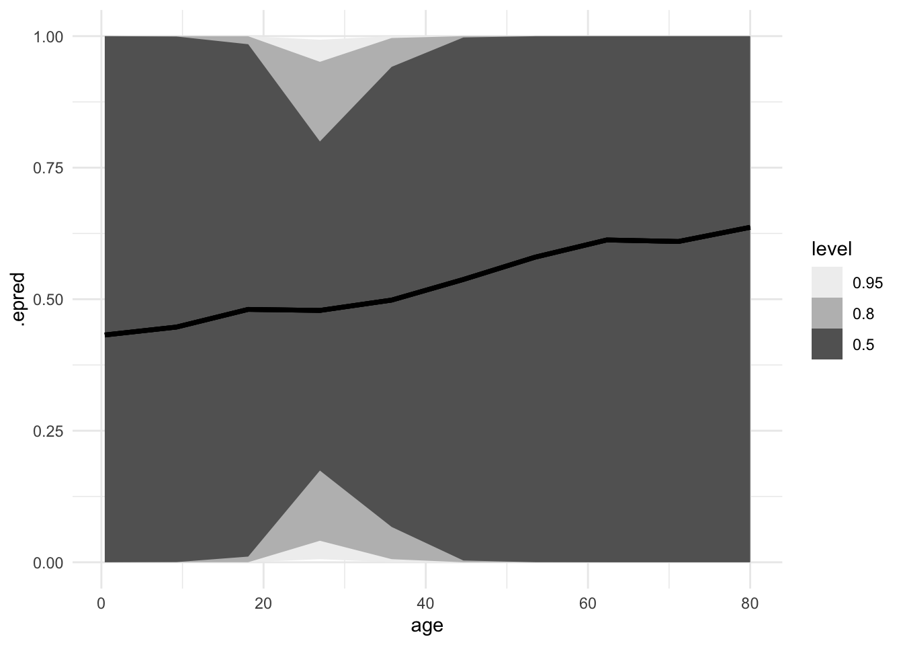
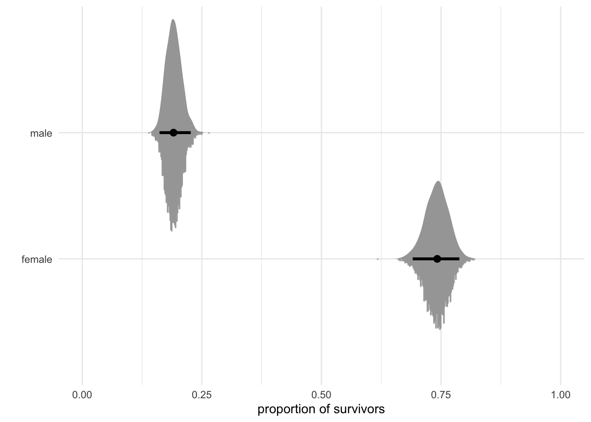

The xth of a series of tutorial posts on Bayesian analyses. In this post I focus on using brms to run a logistic regression.
Published
February 12, 2023
This post is about using brms to run a logistic regression. Logistic regression is different from the models from previous posts because it involves a dichotomous outcome measure. This is different from modeling means, which we have roughly been doing, so there are some new things to keep in mind here.
Run the following code to get started. Note that the data we’ll be using is the titanic dataset. It contains several interesting columns such as whether or not the passenger survived, their sex, and their age.
Let’s say that we want to model the proportion of survivors. We can do that by running a logistic regression in which we regress the outcome (survived: 0 or 1) on an intercept and specify that the outcome comes from a binomial family with a logit transformation. We use the get_prior() function to figure out which priors we need.
Code
get_prior(survived ~1, data = data, family =binomial(link ="logit"))
prior
class
coef
group
resp
dpar
nlpar
lb
ub
source
student_t(3, 0, 2.5)
Intercept
default
We only need a single prior for the intercept. That’s easy enough, but the family and link argument make things a little bit more complicated.
Before we set the priors, let’s also write down the formula for this model.
Notice that there is an n in the formula. This refers to the number of trials while p refers to the proportion of successes. In our case, we can simplify the formula and use the Bernoulli family instead of the Binomial family because the way our data is structured n is always 1. Each row is a single observation about whether the passenger survived or not. We also could have had an alternative structure in which we simply counted the number of passengers who survived and who didn’t, and run a model on this aggregated data. In that case, we would need to use the Binomial family and specify the number of observations (i.e., trials). We don’t need to do that, so our formula is:
Both formulas show that we’re applying a logit transformation and that we only need to set a single prior.
Setting the priors
You might think that because we’re modelling a proportion, the prior for the intercept should be a distribution of values constrained to range from 0 to 1. This is not the case because of the logit transformation. The logit link transforms the probability scale onto a linear scale that ranges from minus infinity to infinity, although the bulk of the values are around 0. We can show this in a graph by applying the transformation to values ranging from 0 to 1.
Code
df <-tibble(x =seq(0, 1, 0.001),logit =logit_scaled(x))ggplot(df, aes(x = x, y = logit)) +geom_point() +labs(x ="p", y ="logit(p)")

Transformation of probability values via the logit link
While the graph does not show that it ranges from one infinity to another, it does show we’re no longer on the probabilty scale. The numbers on the y-axis do not range from 0 to 1.
Our prior needs to be set on the transformed values, not the probability scale. brms sets a default prior of student_t(3, 0, 2.5). Let’s take a look at this prior by running a model and sampling only from this prior (i.e., conducting a prior predictive check).
Family: bernoulli
Links: mu = logit
Formula: survived ~ 1
Data: data (Number of observations: 887)
Draws: 4 chains, each with iter = 2000; warmup = 1000; thin = 1;
total post-warmup draws = 4000
Population-Level Effects:
Estimate Est.Error l-95% CI u-95% CI Rhat Bulk_ESS Tail_ESS
Intercept -0.40 5.72 -10.77 7.76 1.00 1102 711
Draws were sampled using sample(hmc). For each parameter, Bulk_ESS
and Tail_ESS are effective sample size measures, and Rhat is the potential
scale reduction factor on split chains (at convergence, Rhat = 1).
We get an estimate of -0.4 and a 95% CI that ranges from -10.77 to 7.76. Let’s plot the entire prior distribution, both transformed and untransformed.
Code
draws <- fit_prior_default %>%spread_draws(b_Intercept) %>%mutate(b_Intercept_scaled =inv_logit_scaled(b_Intercept))ggplot(draws, aes(x = b_Intercept)) +geom_histogram(binwidth =1, fill = blue_3)ggplot(draws, aes(x = b_Intercept_scaled)) +geom_histogram(binwidth =0.01, fill = blue_3)

Logit scale

Probability scale
Default brms prior on the intercept in a logistic regression
The top graph shows the prior on the logit scale. The bulk of the values are somewhere between -8 and 8, concentrated around 0. This doesn’t seem like a suitable default prior because if we convert these values to the probability scale, it turns out that the extreme values (around 0 and 1) are relatively more likely than other values. I prefer a prior that is either more uniform or perhaps centered around .5, depending on the context. This is likely to be a weak prior though, so it will be easily overrun by data. Nevertheless, let’s try out another prior and see if it produces a more uniform distribution on the probability scale.
That looks better, so let’s use this prior and estimate the probability of survivors in the data.
Code
fit <-brm( survived ~1,family =bernoulli(link ="logit"),data = data,prior =prior(student_t(5, 0, 1.5), class ="Intercept"),file ="models/model.rds",)fit
Family: bernoulli
Links: mu = logit
Formula: survived ~ 1
Data: data (Number of observations: 887)
Draws: 4 chains, each with iter = 2000; warmup = 1000; thin = 1;
total post-warmup draws = 4000
Population-Level Effects:
Estimate Est.Error l-95% CI u-95% CI Rhat Bulk_ESS Tail_ESS
Intercept -0.47 0.07 -0.60 -0.33 1.00 1199 1788
Draws were sampled using sample(hmc). For each parameter, Bulk_ESS
and Tail_ESS are effective sample size measures, and Rhat is the potential
scale reduction factor on split chains (at convergence, Rhat = 1).
We get an estimate of -0.47. Converted to a probability, this is `r round(inv_logit_scales(fixef(fit)[1]), 2). We can do better, of course, and plot a distribution the plausible probability values.
Code
draws <- fit %>%spread_draws(b_Intercept) %>%mutate(b_Intercept_scaled =inv_logit_scaled(b_Intercept))ggplot(draws, aes(x = b_Intercept_scaled)) +geom_histogram(binwidth =0.005, fill = blue_3) +scale_x_continuous(limits =c(0, 1))
The median proportion of survivors is 0.39, with a 95% CI ranging from 0.42 to 0.42.
Adding a discrete predictor
Next, let’s add a discrete predictor, like the passenger’s sex. We begin, once again, by checking which priors we need. Note that we’ll use the index coding notation (so no intercept).
Code
get_prior(survived ~0+ sex, family =bernoulli(link ="logit"), data = data)
prior
class
coef
group
resp
dpar
nlpar
lb
ub
source
b
default
b
sexfemale
default
b
sexmale
default
We need two priors, one for each of two sexes. The formula:
Family: bernoulli
Links: mu = logit
Formula: survived ~ 0 + sex
Data: data (Number of observations: 887)
Draws: 4 chains, each with iter = 2000; warmup = 1000; thin = 1;
total post-warmup draws = 4000
Population-Level Effects:
Estimate Est.Error l-95% CI u-95% CI Rhat Bulk_ESS Tail_ESS
sexfemale 1.06 0.13 0.80 1.31 1.00 3198 2331
sexmale -1.44 0.11 -1.65 -1.23 1.00 3738 2547
Draws were sampled using sample(hmc). For each parameter, Bulk_ESS
and Tail_ESS are effective sample size measures, and Rhat is the potential
scale reduction factor on split chains (at convergence, Rhat = 1).
A downside with models that use transformations is that the estimates are not that interpretable anymore, so let’s just go straight into converting and plotting them.
Code
draws <- fit_sex %>%gather_draws(b_sexfemale, b_sexmale) %>%mutate(.variable =case_match( .variable,"b_sexfemale"~"female", "b_sexmale"~"male" ),.value =inv_logit_scaled(.value) )ggplot(draws, aes(x = .value, fill = .variable)) +geom_histogram(binwidth =0.01) +labs(x ="proportion of survivors", y ="", fill ="Sex") +scale_x_continuous(limits =c(0, 1)) +scale_fill_manual(values =c(blue_2, blue_4))
Posterior distributions of survival proportions by sex
Looks like a sizeable difference between the two sexes, which is not at all surprising of course. Women and children were put in lifeboats first, leading to more women surviving than men. We can calculate the size of this difference by simply converting the estimates to proportions and calculating the difference.
data %>%data_grid(age =seq_range(age, 10)) %>%add_epred_draws(fit_age) %>%ggplot(aes(x = age, y = .epred)) +stat_lineribbon() +scale_y_continuous(limits =c(0, 1)) +scale_fill_brewer(palette ="Greys")

Code
draws <- fit_sex %>%gather_draws(b_sexfemale, b_sexmale) %>%mutate(.variable =case_match( .variable,"b_sexfemale"~"female", "b_sexmale"~"male" ),.value =inv_logit_scaled(.value) )ggplot(draws, aes(x = .value, y = .variable)) +stat_slab() +stat_dotsinterval(side ="bottom", .width = .95) +labs(x ="proportion of survivors", y ="") +scale_x_continuous(limits =c(0, 1))

Source Code
---title: "Bayesian tutorial: Logistic regression"description: "The xth of a series of tutorial posts on Bayesian analyses. In this post I focus on using brms to run a logistic regression."date: 2023-02-12categories: - statistics - tutorial - Bayesian statistics - regressioncode-fold: truecode-tools: truetoc: trueformat: html: df-print: kabledraft: true---This post is about using brms to run a logistic regression. Logistic regression is different from the models from previous posts because it involves a dichotomous outcome measure. This is different from modeling means, which we have roughly been doing, so there are some new things to keep in mind here.Run the following code to get started. Note that the data we'll be using is the titanic dataset. It contains several interesting columns such as whether or not the passenger survived, their sex, and their age.```{r}#| label: setup#| message: falselibrary(tidyverse)library(brms)library(tidybayes)library(modelr)theme_set(theme_minimal())blue_1 <-"#d1e1ec"blue_2 <-"#b3cde0"blue_3 <-"#6497b1"blue_4 <-"#005b96"blue_5 <-"#03396c"blue_6 <-"#011f4b"options(mc.cores =4,brms.threads =4,brms.backend ="cmdstanr",brms.file_refit ="on_change")data <-read_csv("titanic.csv")```Let's say that we want to model the proportion of survivors. We can do that by running a logistic regression in which we regress the outcome (`survived`: `0` or `1`) on an intercept and specify that the outcome comes from a binomial family with a logit transformation. We use the `get_prior()` function to figure out which priors we need.```{r}#| label: single-proportion-get-priorget_prior(survived ~1, data = data, family =binomial(link ="logit"))```We only need a single prior for the intercept. That's easy enough, but the family and link argument make things a little bit more complicated.Before we set the priors, let's also write down the formula for this model.$$\displaylines{survived_i ∼ Binomial(n, p_i) \\ logit(p_i) = \alpha}$$Notice that there is an *n* in the formula. This refers to the number of trials while *p* refers to the proportion of successes. In our case, we can simplify the formula and use the Bernoulli family instead of the Binomial family because the way our data is structured *n* is always 1. Each row is a single observation about whether the passenger survived or not. We also could have had an alternative structure in which we simply counted the number of passengers who survived and who didn't, and run a model on this aggregated data. In that case, we would need to use the Binomial family and specify the number of observations (i.e., trials). We don't need to do that, so our formula is:$$\displaylines{survived_i ∼ Bernoulli(p_i) \\ logit(p_i) = \alpha}$$Both formulas show that we're applying a logit transformation and that we only need to set a single prior.## Setting the priorsYou might think that because we're modelling a proportion, the prior for the intercept should be a distribution of values constrained to range from 0 to 1. This is not the case because of the logit transformation. The logit link transforms the probability scale onto a linear scale that ranges from minus infinity to infinity, although the bulk of the values are around 0. We can show this in a graph by applying the transformation to values ranging from 0 to 1.```{r}#| label: logit-link#| fig-cap: Transformation of probability values via the logit linkdf <-tibble(x =seq(0, 1, 0.001),logit =logit_scaled(x))ggplot(df, aes(x = x, y = logit)) +geom_point() +labs(x ="p", y ="logit(p)")```While the graph does not show that it ranges from one infinity to another, it does show we're no longer on the probabilty scale. The numbers on the y-axis do not range from 0 to 1.Our prior needs to be set on the transformed values, not the probability scale. brms sets a default prior of `student_t(3, 0, 2.5)`. Let's take a look at this prior by running a model and sampling only from this prior (i.e., conducting a prior predictive check).```{r}#| label: single-proportion-default-priorfit_prior_default <-brm( survived ~1,family =bernoulli(link ="logit"),data = data,file ="models/model-prior-default.rds",sample_prior ="only")fit_prior_default```We get an estimate of `r round(fixef(fit_prior_default)[1], 2)` and a 95% CI that ranges from `r round(fixef(fit_prior_default)[3], 2)` to `r round(fixef(fit_prior_default)[4], 2)`. Let's plot the entire prior distribution, both transformed and untransformed.```{r}#| label: single-proportion-default-prior-plot#| fig-cap: "Default brms prior on the intercept in a logistic regression"#| fig-subcap:#| - "Logit scale"#| - "Probability scale"#| layout-ncol: 1#| warning: falsedraws <- fit_prior_default %>%spread_draws(b_Intercept) %>%mutate(b_Intercept_scaled =inv_logit_scaled(b_Intercept))ggplot(draws, aes(x = b_Intercept)) +geom_histogram(binwidth =1, fill = blue_3)ggplot(draws, aes(x = b_Intercept_scaled)) +geom_histogram(binwidth =0.01, fill = blue_3)```The top graph shows the prior on the logit scale. The bulk of the values are somewhere between -8 and 8, concentrated around 0. This doesn't seem like a suitable default prior because if we convert these values to the probability scale, it turns out that the extreme values (around 0 and 1) are relatively more likely than other values. I prefer a prior that is either more uniform or perhaps centered around .5, depending on the context. This is likely to be a weak prior though, so it will be easily overrun by data. Nevertheless, let's try out another prior and see if it produces a more uniform distribution on the probability scale.```{r}#| label: single-proportion-prior#| warning: falsefit_prior <-brm( survived ~1,family =bernoulli(link ="logit"),data = data,prior =prior(student_t(5, 0, 1.5), class ="Intercept"),file ="models/model-prior.rds",sample_prior ="only")draws <- fit_prior %>%spread_draws(b_Intercept) %>%mutate(b_Intercept_scaled =inv_logit_scaled(b_Intercept))ggplot(draws, aes(x = b_Intercept_scaled)) +geom_histogram(binwidth =0.01, fill = blue_3)```That looks better, so let's use this prior and estimate the probability of survivors in the data.```{r}#| label: single-proportion-modelfit <-brm( survived ~1,family =bernoulli(link ="logit"),data = data,prior =prior(student_t(5, 0, 1.5), class ="Intercept"),file ="models/model.rds",)fit```We get an estimate of `r round(fixef(fit)[1], 2)`. Converted to a probability, this is `r round(inv_logit_scales(fixef(fit)[1]), 2). We can do better, of course, and plot a distribution the plausible probability values.```{r}#| label: single-proportion-plot#| fig-cap: Posterior distribution of the probability ofdraws <- fit %>%spread_draws(b_Intercept) %>%mutate(b_Intercept_scaled =inv_logit_scaled(b_Intercept))ggplot(draws, aes(x = b_Intercept_scaled)) +geom_histogram(binwidth =0.005, fill = blue_3) +scale_x_continuous(limits =c(0, 1))```The median proportion of survivors is `r round(inv_logit_scaled(fixef(fit)[1]), 2)`, with a 95% CI ranging from `r round(inv_logit_scaled(fixef(fit)[4]), 2)` to `r round(inv_logit_scaled(fixef(fit)[4]), 2)`.## Adding a discrete predictorNext, let's add a discrete predictor, like the passenger's sex. We begin, once again, by checking which priors we need. Note that we'll use the index coding notation (so no intercept).```{r}#| label: discrete-predictor-priorget_prior(survived ~0+ sex, family =bernoulli(link ="logit"), data = data)```We need two priors, one for each of two sexes. The formula:$$\displaylines{survived_i ∼ Bernoulli(p_i) \\ logit(p_i) = \alpha_{sex[i]}}$$Below we run the model with the same prior we used before, but specified for both male and female passengers separately.```{r}#| label: discrete-predictor-modelfit_sex <-brm( survived ~0+ sex,family =bernoulli(link ="logit"),data = data,prior =c(prior(student_t(5, 0, 1.5), coef ="sexfemale"),prior(student_t(5, 0, 1.5), coef ="sexmale") ),file ="models/model-sex.rds")fit_sex```A downside with models that use transformations is that the estimates are not that interpretable anymore, so let's just go straight into converting and plotting them.```{r}#| label: discrete-predictor-plot#| fig-cap: Posterior distributions of survival proportions by sexdraws <- fit_sex %>%gather_draws(b_sexfemale, b_sexmale) %>%mutate(.variable =case_match( .variable,"b_sexfemale"~"female", "b_sexmale"~"male" ),.value =inv_logit_scaled(.value) )ggplot(draws, aes(x = .value, fill = .variable)) +geom_histogram(binwidth =0.01) +labs(x ="proportion of survivors", y ="", fill ="Sex") +scale_x_continuous(limits =c(0, 1)) +scale_fill_manual(values =c(blue_2, blue_4))```Looks like a sizeable difference between the two sexes, which is not at all surprising of course. Women and children were put in lifeboats first, leading to more women surviving than men. We can calculate the size of this difference by simply converting the estimates to proportions and calculating the difference.```{r}#| label: discrete-predictor-difference-plotfit_sex %>%spread_draws(b_sexfemale, b_sexmale) %>%mutate(b_sexfemale_scaled =inv_logit_scaled(b_sexfemale),b_sexmale_scaled =inv_logit_scaled(b_sexmale),difference = b_sexfemale_scaled - b_sexmale_scaled ) %>%select(difference) %>%median_hdci()```## Adding a continuous predictor```{r}get_prior(survived ~ age, family =bernoulli(link ="logit"), data = data)``````{r}fit_age <-brm( survived ~ age,family =bernoulli(link ="logit"),data = data,prior =c(prior(student_t(5, 0, 1.5), class ="Intercept"),prior(student_t(5, 0, 0.5), class ="b") ),sample_prior ="only"# file = "models/model-sex.rds")data %>%data_grid(age =seq_range(age, 10)) %>%add_epred_draws(fit_age) %>%ggplot(aes(x = age, y = .epred)) +stat_lineribbon() +scale_y_continuous(limits =c(0, 1)) +scale_fill_brewer(palette ="Greys")draws <- fit_sex %>%gather_draws(b_sexfemale, b_sexmale) %>%mutate(.variable =case_match( .variable,"b_sexfemale"~"female", "b_sexmale"~"male" ),.value =inv_logit_scaled(.value) )ggplot(draws, aes(x = .value, y = .variable)) +stat_slab() +stat_dotsinterval(side ="bottom", .width = .95) +labs(x ="proportion of survivors", y ="") +scale_x_continuous(limits =c(0, 1))```